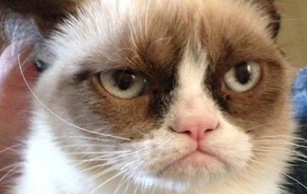
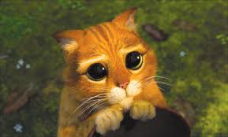
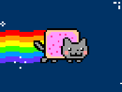
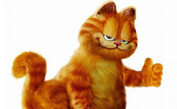

Famous cats you might know
Grumpy Cat
Grumpy Cat (born April 4, 2012), real name Tardar Sauce, is a female cat and Internet celebrity known for her grumpy facial expression. Her owner Tabatha Bundesen says that her permanently grumpy-looking face is due to feline dwarfism. Grumpy Cat's popularity originated from a picture posted to the social news website reddit by Tabatha's brother Bryan on September 22, 2012. It was made into an image macro with grumpy captions. "The Official Grumpy Cat" on Facebook has over 1 million Likes. Grumpy Cat was featured on the front page of The Wall Street Journal on May 30, 2013.
Puss in Boots
Puss in Boots is a fictional cat and a supporting character in the Shrek film series, as well as the primary protagonist of the 2011 spin-off prequel Puss in Boots. He is voiced in English, Spanish and Italian versions by Antonio Banderas. He is based loosely on Charles Perrault's fairy tale character of the same name, and is the main "other fairy tale character" in the three sequels.
Nyan Cat
Nyan Cat also known as Pop Tart Cat, is an 8-bit animation depicting a cat with the body of a cherry pop tart flying through outer space. While absurd themes like flying kittens and pastry cats have been around for some time, the surreal humor behind this particular combination has captivated YouTubers and online art communities, spawning fan illustrations as well as user-interface designs and homebrew games across multiple platforms., which became an Internet meme. The video merged a Japanese pop song with an animated cartoon cat with the body of a Pop-Tart, flying through space, and leaving a rainbow trail behind it.
Catwoman
Catwoman is a fictional character associated with DC Comics' Batman franchise. Historically a supervillainess, the character was created by Bob Kane and Bill Finger. A wily and agile professional thief and sometime love interest of superhero Batman. Clad in a skintight bodysuit and stylized mask and carrying a whip.
Garfield
Garfield is a comic strip created by Jim Davis. Published since June 19, 1978, it chronicles the life of the title character, the cat Garfield (named after Davis's grandfather); his owner, Jon Arbuckle; and Jon's dog, Odie. Maybe one of the most widely known cat cartoon, Garfield is one cat with attitude. He isn’t interested in much, except lasagna, napping, lasagna, teasing the dog, oh, and did we mention lasagna?
Catdog
Cat is the smarter and more cunning of the two. He often devises plans to trick Dog into getting what he wants, such as making Dog smarter in an attempt to have more in common with him, or having him win a dog sledding contest by training him in a very hard and militaristic manner, and usually, as a result of his greediness and selfishness, these schemes all blow up in his face.